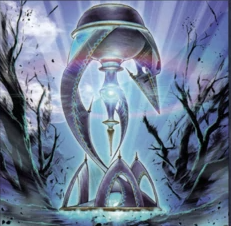
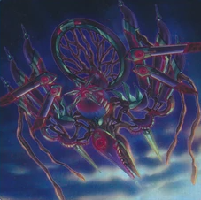
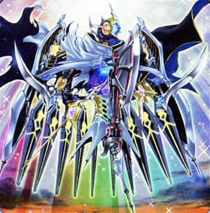
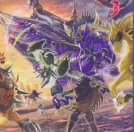
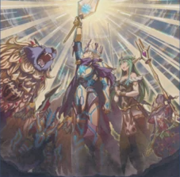
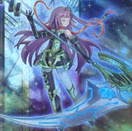
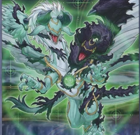
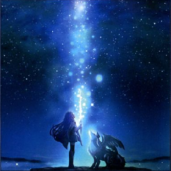

Yu-Gi-Oh! has offered a myriad of archetypes over the years ever since the dawn of Gravekeeper's setting the standard back in Pharonic Guardian of what it means to be an archetype, that being, a group of cards associated together for one specific play style or a conjunction of playstyles. This website goes over the World Legacy archetypes, being introduced in Code Of The Duelist and ending on Eternity Code. All archetypes revolving around an aspect of the link summoning mechanic that was also introduced in Code Of The Duelist which similar to previous new summoning mechanics introduced in Yu-Gi-Oh! beforehand, had changed the playing style for the future.
| Archetype Name(Click name for wiki page): | Archetype Picture: | Archetype's Playstyle: |
|---|---|---|
| World Chalice |  | Introduced the link summoning mechanic to the game and the concept of "co-linking". |
| Krawler |  | Swarm the field by setting monsters, flipping them face-up to activate specific effects, and working around the fact you can place 6 monsters on the field now. |
| Mekk-Knight |  | Played around the mechanic of "columns", emphasizing placement of cards at specific columns on the field. |
| Knightmare |  | Fully pushed the mechanic of "U-linking" and had great emphasis on "co-linking". |
| Crusadia |  | Played around the link monster's arrows by special summoning monsters under the arrows. |
| Orcust |  | Banishes monsters from the GY in order to activate effects. Punished your opponent for placing cards in Orcust link monster's arrows. |
| Guardragon |  | Special summoned dragon type monsters to activate effects based on placement(GY or field). |
| World Legacy |  | Supports all other archetypes listed above. |
School Email: wnguyen1240@st.cabarrus.k12.nc.us
School Phone: 704-260-6600